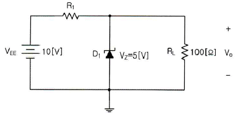
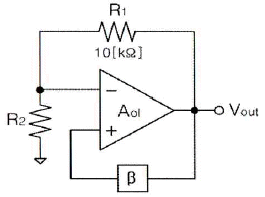
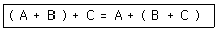
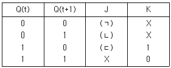
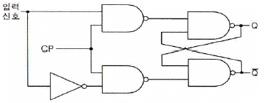
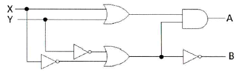
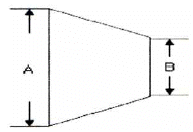
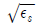
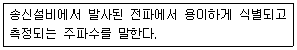

무선설비산업기사 (2018-03-04 기출문제)
1과목: 디지털 전자회로
1. 다음 중 직류 전원회로를 구성하는 회로가 아닌것은?
- 정류회로
- 변조회로
- 평활회로
- 정전압회로
(정답률: 74%)

2. 다음 그림에서 제너다이오드에 흐르는 전류가 25[mA]가 되도록 정전압회로를 설계하려면 저항 R1값은 약 얼마인가?

- 0.7[Ω]
- 1.2[Ω]
- 16.5[Ω]
- 66.7[Ω]
(정답률: 65%)
3. 다음 중 FET(Field Effect Transistor)에 대한 설명으로 틀린 것은?
- 입력 임피던스가 크다.
- 다수캐리어에 의해서만 동작한다.
- 게이트 전류에 의해서 드레인 전류가 제어된다.
- 트랜지스터보다 이득-대역폭적이 작다.
(정답률: 62%)
4. 베이스(B)를 기준으로 PNP 트랜지스터가 활성영역에서 동작하기 위한 바이어스로 알맞은 것은? (단, E: 이미터, C: 컬렉터 이다.)
- E는 +, C는 -
- E는 -, C는 +
- E는 +, C는 +
- E는 -, C는 -
(정답률: 78%)
5. 전압증폭기의 전압이득이 1,000±100일 때, 이 전압 이득의 변화를 0.1[%]로 하기 위한 부궤환 증폭기의 β는 얼마인가?
- 9
- 0.9
- 0.09
- 0.099
(정답률: 64%)
6. 다음 중 부궤환 증폭기의 특징이 아닌 것은?
- 부하변동에 의한 이득 변동이 감소한다.
- 일그러짐과 잡음이 증가한다.
- 주파수 특성이 좋다.
- 증폭도가 감소한다.
(정답률: 75%)
7. 다음 그림은 윈 브리지 발진기의 블록도이다. 발진하기 위한 저항 R2의 값은? (단, 발진을 위한 개방루프 이득은 3이다.)

- 5[kΩ]
- 10[kΩ]
- 20[kΩ]
- 30[kΩ]
(정답률: 66%)
8. 다음 중 슈미트 트리거(Schmitt Trigger) 회로의 응용 분야가 아닌 것은?
- 전압비교기 회로
- 구형파 발생 회로
- D/A(Digital to Analog) 변환 회로
- 리미터 회로
(정답률: 75%)
9. 다음 중 변조의 목적이 아닌 것은?
- 안테나의 길이를 줄일 수 있다.
- 잡음 및 간섭의 영향을 적게 받는다.
- 주파수 분할의 다중통신을 할 수 있다.
- 송신 전력을 일정하게 유지할 수 있다.
(정답률: 59%)
10. 주파수 20[kHz]의 정현파로 30[MHz]의 반송 주파수를 주파수 변조할 때, 최대 주파수 편이가 80[kHz]일 때 FM파의 주파수 대역폭은 얼마인가?
- 180[kHz]
- 190[kHz]
- 200[kHz]
- 300[kHz]
(정답률: 65%)
11. 다음 중 대역폭의 효율성과 복조의 용이성을 얻기 위해 진폭편이 변조 방식과 위상편이 변조방식을 결합한 방식은?
- FSK(Frequency Shift Keying) 방식
- QPSK(Quadrature Phase Shift Keying) 방식
- QAM(Quadrature Amplitude Modulation) 방식
- ASK(Amplitude Shift Keying) 방식
(정답률: 83%)
12. 다음 중 PCM(펄스부호변조)에 대한 설명으로 틀린 것은?
- S/N비가 좋고 원거리 통신에 유용하다.
- 신호파를 표본화시킨다.
- 연속적인 시간과 진폭을 가진 아날로그 데이터를 디지털 신호로 변환하는 것이다.
- 표본화된 신호를 부호화한 다음에 양자화한다.
(정답률: 78%)
13. 다음 중 위상 고정 루프(PLL: Phase Locked Loop)를 구성하는 내부 회로가 아닌 것은?
- 전압 제어 발진기
- 주파수체배기
- 위상 비교기
- 저역 통과 필터
(정답률: 63%)
14. 다음 중 멀티바이브레이터에 대한 설명으로 잘못된 것은?
- 정궤환이 이루어지는 회로이다.
- 출력 파형은 고차의 고조파를 포함한다.
- 시정수는 입력 파형의 주기를 결정한다.
- 스위치 회로의 구형파 발생, 계수회로로 사용된다.
(정답률: 55%)
15. 다음 불 대수의 정리와 관련 있는 것은?

- 교환 법칙
- 결합 법칙
- 분배 법칙
- 부정 법칙
(정답률: 79%)
16. 다음 J-K 플립플롭의 여기표(Excitation Table)에서 각각의 괄호 안에 맞는 답은? (단, X는 Don't care를 의미하며, J-K 플립플롭의 이전 값은 초기화된 것으로 가정한다.)

- (ㄱ) = 1, (ㄴ) = X, (ㄷ) = 0
- (ㄱ) = 0, (ㄴ) = X, (ㄷ) = 1
- (ㄱ) = 0, (ㄴ) = 1, (ㄷ) = X
- (ㄱ) = 1, (ㄴ) = 0, (ㄷ) = X
(정답률: 80%)
17. 다음 회로가 나타내는 플립플롭회로는 무엇인가?

- T 플립플롭
- D 플립플롭
- J-K 플립플롭
- S-R 플립플롭
(정답률: 82%)
18. 2진 4단 리플 카운터는 몇 개의 펄스를 계수할 수 있는가?
- 4개
- 8개
- 16개
- 32개
(정답률: 82%)
19. 다음 그림과 같은 논리회로는 어떤 기능을 수행하는가?

- 일치회로
- 반가산기
- 전가산기
- 반감산기
(정답률: 81%)
20. 다음 중 BCD 부호를 10진수로, 2진수를 8진수나 16진수로 변화하기 위해 사용되는 회로는?
- 디코더
- 인코더
- 멀티플렉서
- 디멀티플렉서
(정답률: 76%)
2과목: 무선통신 기기
21. 다음 중 AM 송･수신기에 대한 설명으로 틀린것은?
- 아날로그 송･수신기의 한 종류이다.
- FM 송･수신기에 비해 구조가 간단하다.
- 주로 단파대에서 많이 사용된다.
- 타 송･수신기에 비해 잡음에 강하므로 품질이 우수하다.
(정답률: 73%)
22. 다음 중 AM 송신기의 구성요소가 아닌 것은?
- 발진회로
- 변조회로
- 검파회로
- 증폭회로
(정답률: 74%)
23. 다음 중 FM 송신기에 사용되는 Pre-Emphasis 회로에 대한 설명으로 옳은 것은?
- S/N비를 향상시키는 효과가 있다.
- 전력 증폭의 효율은 높이기 위하여 사용한다.
- 선택도가 개선된다.
- 적분회로로 구성한다.
(정답률: 69%)
24. 다음 중 디지털 데이터 0과 1을 아날로그 통신망을 사용하여 전송할 때 반송파의 진폭과 위상에 실어 보내는 변조 기술은?
- ASK(Amplitude Shift Keying)
- FSK(Frequency Shift Keying)
- PSK(Phase Shift Keying)
- QAM(Quadrature Amplitude Modulation)
(정답률: 73%)
25. 다음 중 레이다의 최대탐지거리에 영향을 주는 요소가 아닌 것은?
- 송신 출력
- 안테나 이득
- 송신 펄스 폭
- 수평 빔 폭
(정답률: 64%)
26. 다음 중 마이크로파(Microwave) 통신방식의 특징에 대한 설명으로 틀린 것은?
- 가시거리내의 통신이 가능하다.
- 대형 안테나로 파장이 긴 전파를 이용한다.
- 우주통신에 많이 이용된다.
- 지향성이 예민하다.
(정답률: 74%)
27. 가장 적은 수의 정지위성으로 양극지방을 제외한전 세계를 커버(Cover)하는 통신망을 구성할 수 있는 배치 방법은?
- 5개의 위성을 72도 간격으로 배치한다.
- 4개의 위성을 90도 간격으로 배치한다.
- 3개의 위성을 120도 간격으로 배치한다.
- 2개의 위성을 180도 간격으로 배치한다.
(정답률: 85%)
28. 다음 이동통신에 사용되는 무선 채널제어 중역방향 채널제어에 해당하는 것은?
- Pilot Channel
- Sync Channel
- Access Channel
- Paging Channel
(정답률: 83%)
29. 어떤 시스템에 입력된 신호가 20[dB] 증폭되어 나타난 값이 1.8[W]가 되었다면 원래 입력된 신호 값은?
- 0.060[W]
- 0.⑤0[W]
- 0.018[W]
- 0.012[W]
(정답률: 77%)
30. 다음 중 스펙트럼 확산변조의 종류가 아닌 것은?
- 직접확산 변조방식
- 주파수 도약 변조방식
- 주기 도약 변조방식
- 펄스화 주파수 변조방식
(정답률: 56%)
31. 다음 중 이동통신서비스를 제공하기 위해 고속철도 터널 구간에 가장 적합한 중계기는?
- 옥외형 중계기
- 주파수변환 중계기
- 레이저 중계기
- 누설 동축케이블 중계기
(정답률: 81%)
32. 다음 중 축전지 충전 방식의 종류가 아닌 것은?
- 단순 충전
- 평상 충전
- 균등 충전
- 부동 충전
(정답률: 81%)
33. 다음 중 전력변환장치의 중화회로에 대한 설명으로 틀린 것은?
- 중화회로는 중화용 콘덴서에 의한 것과 중화용 코일에 의한 것이 있다.
- 중화용 콘덴서에 의한 방법으로는 TR이나 진공관을 사용한다.
- 자기발진을 방지할 수 있다.
- 전압제어방식으로 공진을 유도한다.
(정답률: 65%)
34. 태양전지에서 만들어진 직류전기를 교류전기로 만들어주는 것은?
- 인버터
- 컨버터
- 광센서
- 콘트롤러
(정답률: 84%)
35. 다음 중 시외전화망과 같은 곳에서 사용하는 무급전 중계 방식에서 전파손실을 경감시키기 위한 방법으로 틀린 것은?
- 중계구간을 짧게 한다.
- 반사판을 직각에 가깝게 한다.
- 반사판을 크게 한다.
- 사용주파수를 낮게 한다.
(정답률: 65%)
36. 수신기의 종합 특성을 결정하는 파라미터로서 혼신 및 간섭 등을 어느 정도까지 분리 및 제거할 수 있는가의 능력을 나타내는 것은?
- 감도
- 선택도
- 충실도
- 안정도
(정답률: 79%)
37. 브라운관 오실로스코프를 사용하여 진폭변조파를 측정한 결과 그림과 같은 파형을 얻었다. 이 파형의 최대값 A를 40[mm]로 하고 변조도를 90[%]로 하기 위한 최저값의 크기는 약 몇 [mm] 정도가 적합한가?

- 1.5[mm]
- 2.1[mm]
- 3.3[mm]
- 22.5[mm]
(정답률: 60%)
38. 수신기 입력에 10[μV]의 전압을 인가하였을 때 출력 전압이 10[V]일 경우 수신기의 감도는 몇 [dB]인가?
- 60[dB]
- 80[dB]
- 100[dB]
- 120[dB]
(정답률: 66%)
39. 다음 중 전송선로의 정합상태를 나타내는 것은?
- 정재파비
- 가변 임피던스
- 스미스 도표
- 특성 임피던스
(정답률: 80%)
40. 1:2 전원변압기를 통해 AC 100[V]의 교류입력이 전파 정류될 경우 출력되는 평균 DC전압은 약 얼마인가?
- 300[V]
- 270[V]
- 200[V]
- 180[V]
(정답률: 71%)
3과목: 안테나 개론
41. 다음 중 파동의 전파속도에 대한 설명으로 옳은 것은?
- 투자율이 클수록 증가한다.
- 유전율이 클수록 증가한다.
- 언제나 일정하다.
- 파동의 전파속도는 진동수와 파장의 곱에 비례한다.
(정답률: 72%)
42. 다음 중 안테나의 편파상태와 전파의 편파상태에 따라 안테나에 유기되는 전압과의 관계에 대한 설명으로 옳은 것은?
- 전파의 편파상태와 안테나의 편파상태가 일치할 때 최대전압이 유기된다.
- 전파의 편파상태와 안테나의 편파상태가 일치할 때 최소전압이 유기된다.
- 전파의 편파상태와 안테나의 편파상태가 45°일 때 최소전압이 유기된다.
- 전파의 편파상태와 안테나의 편파상태가 90°일 때 최대전압이 유기된다.
(정답률: 66%)
43. 다음 중 전계와 자계에 대한 설명으로 옳은 것은?
- 자기력선은 발산이 있으나 전기력선은 없다.
- 전계와 자계 모두 에너지 보존법칙이 성립한다.
- 전계는 전류 및 자하에 의하여 형성된다.
- 전기력선은 항상 폐곡선을 형성한다.
(정답률: 80%)
44. 다음 중 동축 케이블에 대한 설명으로 틀린것은?
- 특성 임피던스 Zo는

에 반비례한다. - 평행 2선식 급전선에 비해 특성 임피던스가 크다.
- 외부로부터 유도방해가 거의 없다.
- 평행 2선식 급전선보다 선간 전압이 낮다.
(정답률: 65%)
45. 다음 중 스미스 챠트를 이용한 임피던스 매칭의 경우 매칭 주파수의 대역폭을 넓히는 방법으로 적합한 것은?
- 가능한 커패시터만을 사용하도록 매칭 소자를 결정한다.
- 매칭 주파수를 줄여가면서 Q를 높인다.
- 스미스 챠트가 움직이는 궤적을 수평축에서 멀리 떨어진 점의 소자 값을 선택한다.
- 다단 매칭을 이용하는 방법으로 매칭 소자를 많이 사용한다.
(정답률: 60%)
46. 다음 중 비동조 급전선에 대한 설명으로 틀린것은?
- 급전상의 전송파는 정재파이다.
- 정합장치가 필요하다.
- 급전선에서의 손실이 적고 전송효율이 높다.
- 송신기와 안테나 사이의 거리가 멀 때 적합하다.
(정답률: 56%)
47. 다음 중 도파관의 임피던스 정합방법이 아닌것은?
- 발룬(Balun)에 의한 방법
- 창(Window)에 의한 방법
- 금속막대(Post)에 의한 방법
- 스터브(Stub)에 의한 방법
(정답률: 68%)
48. 다음 중 도파관에 대한 설명으로 틀린 것은?
- 원형 도파관은 기본모드가 TE11이다.
- 구형 도파관은 기본모드가 TM10이다.
- 도파관에서 차단주파수 이하 주파수는 고역통과필터(HPF)로 동작한다.
- 관내의 파장은 자유공간에서의 파장보다 길다.
(정답률: 71%)
49. 공진회로에서 1.5[H]의 인덕터와 0.4[μF]의 커패시터가 직렬 연결된 경우 공진주파수는 약 얼마인가?
- 103[Hz]
- 206[Hz]
- 301[Hz]
- 4⑤[Hz]
(정답률: 66%)
50. 다음 중 급전선에서 정재파비가 1인 경우에 대한 설명으로 적합한 것은?
- 완전 정합상태이다.
- 반사계수의 값이 1이다.
- 급전선의 고유 임피던스가 1[Ω]이다.
- 급전선의 표피효과를 무시할 수 있을 때이다.
(정답률: 71%)
51. 임의 안테나 A, B에 같은 전력을 공급하였다. 이때 최대 방사방향으로 임의 점의 전계강도는 각각 1,000[μV/m], 100[μV/m]이었다. 다음 중 두 안테나 이득의 비는 얼마인가?
- 10[dB]
- 20[dB]
- 30[dB]
- 40[dB]
(정답률: 67%)
52. 다음 중 지향성 안테나는?
- 휩 안테나
- 브라운 안테나
- 슬리브 안테나
- 콜리니어 어레이 안테나
(정답률: 69%)
53. 다음 중 진행파형 안테나가 갖는 일반적인 성질이 아닌 것은?
- 광대역
- 단향성
- 고효율
- 부엽이 많음
(정답률: 55%)
54. 도체망과 대지 사이에 변위전류가 흐르게 하여 접지하는 방식으로 바위산, 건물의 옥상 등에 적용되는 접지 방식은?
- 심굴접지
- 방사상접지
- 다중접지
- 가상접지
(정답률: 69%)
55. 전리층의 높이를 측정하기 위해 지상에서 임펄스파를 상공으로 발사한 후 0.001[초] 후에 반사파를 수신하였을 경우 반사층의 높이는 얼마인가?
- 250[km]
- 200[km]
- 150[km]
- 100[km]
(정답률: 65%)
56. 다음 지상파 중 시계 외의 원거리 통신에 사용되는 전파는?
- 직접파
- 지면 반사파
- 표면파
- 회절파
(정답률: 73%)
57. 다음 중 대류권 전파의 감쇠에 해당되지 않는 것은?
- 강우에 의한 감쇠
- 구름, 안개에 의한 감쇠
- 바람에 의한 감쇠
- 대기에 의한 감쇠
(정답률: 83%)
58. 어느 송･수신소 사이의 MUF(Maximum Useful Frequency)가 10[MHz]일 때 FOT(Frequency of Optimum Transmission)는 얼마인가?
- 6.5[MHz]
- 7.5[MHz]
- 8.5[MHz]
- 9.5[MHz]
(정답률: 67%)
59. 다음 중 전리층 반사파의 특징으로 틀린 것은?
- 전리층 반사파는 원거리까지 전파된다.
- 전리층을 뚫고 나갈 때의 감쇠는 파장이 길수록 적다.
- 불감지대가 생길 때가 있다.
- 전리층의 영향을 받아 각종 페이딩으로 인해 전반적으로 불안정하다.
(정답률: 64%)
60. 다음 중 공전잡음을 경감시키는 방법으로 틀린것은?
- 수신기의 대역폭을 넓게 하여 선택도를 높인다.
- 송신출력을 증대시켜 수신점의 S/N비를 크게 한다.
- 수신기에 억제회로를 부착한다.
- 지향성 안테나를 사용한다.
(정답률: 66%)
4과목: 전자계산기 일반 및 무선설비기준
61. 다음 중 CPU의 명령어 실행 과정 순서를 올바르게 나열한 것은?
- Fetch Cycle→ Decoder Cycle→ Execute Cycle
- Decoder Cycle→ Fetch Cycle→ Execute Cycle
- Fetch Cycle→ Execute Cycle→ Decoder Cycle
- Decoder Cycle→ Execute Cycle→ Fetch Cycle
(정답률: 68%)
62. 주소 형식에 따른 컴퓨터 구조에서 0- 주소 명령어 형식은?
- 누산기(Accumulator) 구조
- 범용 레지스터(GPR) 구조
- 큐(Queue) 구조
- 스택(Stack) 구조
(정답률: 74%)
63. 16진수 (19AC)16을 10진수로 변환하면?
- 5572
- 5582
- 6572
- 6582
(정답률: 72%)
64. 10진수 0.337695를 8진수로 변환한 것은?(단, 소수 다섯 숫자까지 표기한다.)
- 0.25471
- 0.27451
- 0.35741
- 0.37541
(정답률: 52%)
65. 다음 중 컴퓨터 운영체제의 형태에 따른 종류별 특징에 대한 설명으로 틀린 것은?
- 단일 사용자 시스템은 시스템 자원보호 메커니즘이 단순하다.
- 멀티태스킹(Multitasking) 시스템은 여러 사용자가 동시에 컴퓨터를 사용할 수 있으며, 다중 작업에 필요한 기능을 제공하는 운영체제이다.
- 일괄처리 시스템은 작업처리량(Throughput), 자원의 활용도(Resource Utilization)를 높이는 데 초점을 둔다.
- 시분할 시스템의 응답시간은 일괄처리 시스템에 비해 느리다.
(정답률: 68%)
66. 다음 중 원시 언어로 작성한 프로그램을 컴퓨터가 실행할 수 있는 기계어 프로그램으로 바꾸어 주는 언어 번역 프로그램이 아닌 것은?
- 어셈블러
- 컴파일러
- 매크로 처리기
- 인터프리터
(정답률: 74%)
67. 다음 중 두 개의 모듈이 같이 실행되면서 서로 호출하는 형태를 무엇이라 하는가?
- 라이브러리(Library)
- 유틸리티(Utility)
- 서브프로그램(Subprogram)
- 코루틴(Coroutine)
(정답률: 69%)
68. 다음 중 논리적 데이터 모델의 종류가 아닌것은?
- 분산(Variance) 데이터 모델
- 네트워크(Network) 데이터 모델
- 관계(Relational) 데이터 모델
- 계층(Hierarchical) 데이터 모델
(정답률: 58%)
69. 다음 중 마이크로프로세서 내부구조에 대한 설명으로 옳은 것은?
- 프로그램 카운터: 프로그램메모리의 어느 위치에 있는 명령어를 수행할 것인가를 나타낸다.
- 명령어 레지스터: 프로그램 카운터의 값을 변경한다.
- 해독장치: 명령어를 지정한다.
- 타이밍 발생기: 다음 명령어의 위치를 가리킨다.
(정답률: 77%)
70. 다음 중 데이터 버스를 명령어 버스와 데이터 버스로 구분하여 설계한 버스 구조는?
- 이중 버스 구조
- 단일 버스 구조
- 다중 버스 구조
- 하버드(Harvard) 버스 구조
(정답률: 75%)
71. 법령에서 다음 정의를 가리키는 용어는?

- 지정주파수
- 기준주파수
- 특성주파수
- 분배주파수
(정답률: 71%)
72. 디지털 선택호출장치를 설치한 의무선박국은 선박의 항행 중 몇 회 이상 그 기능을 확인하여야 하는가?
- 매년 1회 이상
- 매주 1회 이상
- 매월 1회 이상
- 매일 1회 이상
(정답률: 69%)
73. 첨두포락선 전력의 표시 기호는?
- PR
- PZ
- PX
- PY
(정답률: 68%)
74. 다음 중 법령에서 정한 실험국의 개설조건으로 틀린 것은?
- 과학지식의 보급에 공헌할 합리적인 가능성이 있을 것
- 신청인이 그 실험을 수행할 인적자원이 풍부할 것
- 실험의 목적과 내용이 공공복리를 해하지 아니할 것
- 합리적인 실험의 계획과 이를 실행하기 위한 적당한 설비를 갖추고 있을 것
(정답률: 79%)
75. 다음 통신공사의 감리업무에서 무선설비 주요 기자재를 검수하는 방법 중 조회에 의한 검수 내용으로 옳은 것은?
- 검수방법은 감리사가 입회하여 재료 제작자의 시험설비나 공장시험장에서 시험을 실시하고 그 결과로 얻은 성적표로 검수한다.
- 감리사가 공공시험기관에 시험을 의뢰 요청하여 실시하고 그 시험성적 결과에 의하여 검수한다.
- 대상 기자재의 범위는 공사상 중요한 기자재 또는 특별 주문품, 신제품 등으로써 품질 성능을 판정할 필요가 있는 기자재로 한다.
- 규격을 증명하는 KS 등의 마크가 표시되어 있는 규격품이나 적절하다고 인정할 수 있는 품질증명이 첨부되어 있는 제품을 대상으로 한다.
(정답률: 80%)
76. 다음 중 정보통신공사의 공사비 산정 기준을 정하는 방법으로 적합하지 않은 것은?
- 표준품셈
- 일반 시장단가
- 공사업 실태 조사결과
- 공사원가 산정기준 조사결과
(정답률: 75%)
77. 다음 중 적합인증을 받아야 하는 대상기자재가 아닌 것은?
- 가정용 전기기기 및 전동기기류
- 무선전화 경보자동수신기
- 국내 항해용 레이다
- 네비텍스수신기
(정답률: 70%)
78. 다음 중 시험기관의 지정신청에 대한 설정으로 옳은 것은?
- 국립전파연구원 원장은 시험기관의 지정신청을 받은 때에는 신청서를 제출 받은 날로부터 60일 이내에 지정여부를 결정, 1회에 한하여 30일의 범위 안에서 연장할 수 있다.
- 국립전파연구원 원장은 시험기관의 지정신청을 받은 때에는 신청서를 제출 받은 날로부터 70일 이내에 지정여부를 결정, 1회에 한하여 40일의 범위 안에서 연장할 수 있다.
- 국립전파연구원 원장은 시험기관의 지정신청을 받은 때에는 신청서를 제출 받은 날로부터 80일 이내에 지정여부를 결정, 1회에 한하여 50일의 범위 안에서 연장할 수 있다.
- 국립전파연구원 원장은 시험기관의 지정신청을 받은 때에는 신청서를 제출 받은 날로부터 60일 이내에 지정여부를 결정, 2회에 한하여 30일의 범위 안에서 연장할 수 있다.
(정답률: 73%)
79. 변조신호에 따라 반송파가 진폭 변조되는 송신장치는 변조도가 몇 [%]를 초과하지 말아야 하는가?
- 80[%]
- 85[%]
- 90[%]
- 100[%]
(정답률: 78%)
80. 다음 중 안테나계에 낙뢰보호장치를 설치하지 않아도 되는 무선국은?
- 육상이동국
- 기지국
- 방송국
- 고정국
(정답률: 82%)